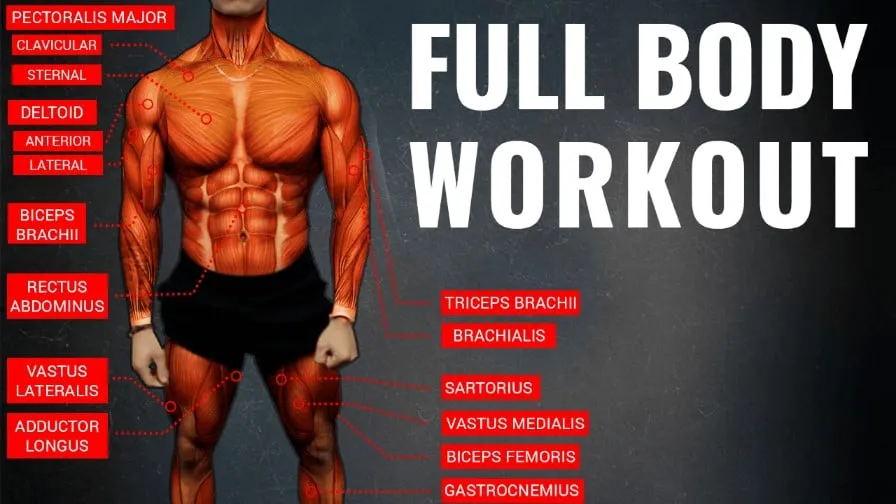

Le Full-Body
Pourquoi choisir le full body

Le full body possède plusieurs avantages qui doivent être pris en compte quand vous allez
établir votre programme d’entraînement :
Le travail du corps dans son intégralité est sûrement l’atout principal de cette forme
d’entraînement. Le fait de travailler tous les groupes musculaires en une seule séance
permet d’avoir un corps bien équilibré. Cela est avantageux autant sur le plan mécanique
qu’esthétique.
Sécher une séance n’est pas pénalisant
En split le fait de manquer une séance crée un vide dans l’entraînement, vu que chaque
séance correspond à un groupe musculaire précis. En full body, le travail complet ne rend
pas du tout pénalisant une absence. Car vous avez déjà travaillé tout le corps lors de
précédente séance, ou vous allez travailler tout le corps à la prochaine séance.
L’apprentissage des mouvements est accéléré Pour ceux qui commencent, il est important de
savoir bien exécuter les mouvements. Mais pour cela, il faut répéter plusieurs fois les
exercices. En split, un exercice n’est répété que tout au plus deux fois par semaine. Alors
qu’en full body, ce sera jusqu’à quatre à cinq fois par semaine.
Votre emploi du temps de la semaine est moins chargé En full body les séances varient entre
deux à trois fois par semaine, la plupart du temps c’est le lundi, le mercredi et le
vendredi. Alors qu’en split si vous voulez obtenir un résultat optimal, il faudra
s’entraîner presque tous les jours. Le full body vous permet d’avoir plus de temps libre.
Les risques en full body
Malgré ces avantages, opter pour le full body comporte tout de même quelques risques.
Cependant, toutes les routines en musculation ont des inconvénients. Il vous importe de voir
la routine qui pourrait vous convenir.
Il est difficile de développer un groupe musculaire précis Lorsque vous voulez vous
concentrer sur un groupe musculaire en particulier le full body n’est pas du tout adapté.
Alors là, il faudra commencer à envisager des exercices d’isolation et plus de simple
exercice de base.
La concentration s’estompe à travers les exercices Les entraînements en full body comportent
une combinaison de divers exercices.
Il est alors important de garder la même intensité durant le travail, mais avec la fatigue
et la différence des mouvements on peut être amené à bâcler les derniers exercices.
Par conséquent on pourrait négliger les groupes de muscle des exercices en fin de séance.
Ce problème concerne surtout ceux qui dépassent le stade des débutants, et dont le
développement de la force et la prise de masse nécessitera alors une intensité et une
attention plus accrues.
Les séances en full body sont longues En comptant toutes la préparation dont l’échauffement
et les étirements, les séances en full body peuvent prendre plusieurs heures.
Si en split ça ne dépassera pas les 1h30 en full body vous pouvez arriver jusqu’à 3h de
séance d’entraînement.
On conseillera toujours de ne pas dépasser 1h30 d’entrainement !
La récupération peut devenir problématique Quand vous atteignez un certain niveau, cela
commence à être extrêmement fatiguant d’enchaîner plusieurs exercices polyarticulaires en
une seule séance.
Car les exercices s’intensifient à mesure que votre niveau progresse et que vos muscles se
développent.
Ainsi, la fatigue sera plus importante qu’une possibilité de récupération.
Qui devrait faire du full body ?
Il est important de préciser qui sont les personnes qui devraient opter pour l’entraînement
en full body, car chaque routine vise un groupe de pratiquant précis :
Ceux qui ont des emplois du temps serrés Si vous n’avez la possibilité de passer à la salle
de sport qu’une à deux fois par semaine, cet entraînement est parfait pour vous.
Ceux qui débutent en musculation Vous l’aurez compris, pour débuter, le full body est le
meilleur entraînement possible. Un apprentissage accéléré des bons gestes et un travail
complet du corp, que demander de plus.
Ceux qui aiment les entraînements intenses La déclinaison du full body pour les
expérimentés, c’est le HIIT (High-Intensity Interval Training). C’est un entraînement qui
s’adresse à ceux qui aiment repousser leurs limites dans le but d’optimiser la perte
calorique.
Comment établir un programme en full body
Le choix de la routine est essentiel pour une bonne progression. Les facteurs à prendre
généralement en compte sont le niveau, le résultat attendu et la disponibilité.
Afin de faciliter l’apprentissage voici un exemple de routine pour débutant avec lequel vous
pourrez progresser :
Fréquence d’entraînement : tous les 2-3 jours
Durée de la routine : 4 à 6 mois selon la progression
Sets par exercice : 2 à 3 sets
Temps de récupération : 2 minutes
Les exercices qui composent l’entraînement sont :
3 sets de 12-15 crunch
2 sets de 8-12 développés couchés
2 sets de 8-12 papillons aux haltères
2 sets de 8-12 tirages poitrine poulie haute
2 sets de 8-12 tirage horizontale
3 sets de 8-12 développés épaules aux haltères
3 sets de 8-12 curl
3 sets de 8-12 triceps prise pronation à la poulie
2 sets de 8-12 squats
2 sets de 8-12 d’extensions de jambes
3 sets de 12-15 Leg Curl Ischios
3 sets de 12-15 d’extension de mollets
Ce modèle n’est là que pour faciliter vos premiers pas, selon votre progression vous pourrez
moduler votre programme d’entraînement.
N’oubliez pas, l’efficacité d’un entraînement ne repose non seulement sur sa qualité, mais
aussi sur l’alimentation et le respect des temps de repos.